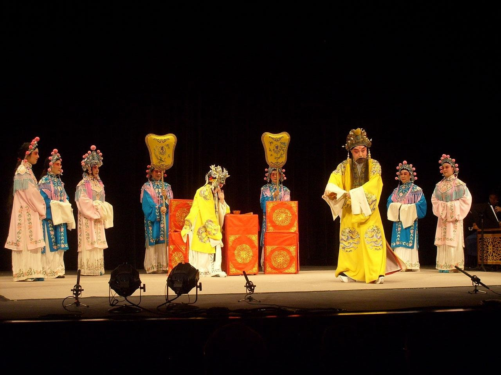

当电视剧点燃秦腔热情
2026年，电视剧《主角》热播，让"秦腔"这个古老剧种意外"出圈"。
剧中没有炫目的特效，没有流量明星，只有一群秦腔演员在时代浪潮中的起落沉浮。但正是这份"土得掉渣"的真诚，打动了无数观众——有人评价："看《主角》，像是揭开了一道口子，里面涌动着粗粝、滚烫的生命力。"
如果用一句话介绍秦腔——
它是中国最古老的戏剧之一，起源于陕西、甘肃一带，声音高亢激越，有"一声秦腔吼，八百里秦川动"的说法。
这份报告的初衷，是给那些被《主角》"勾住"的观众——你们对秦腔产生了好奇，但可能不知道从何"入坑"。
报告有7个部分：
你可以——
秦腔不"精致"，不"优雅"，但它"真"。
希望这份报告，能让你感受到那一声"吼"背后的千年气脉。
准备好了吗？下一章，我们穿越回明朝，看秦腔如何一步步从"西调"变成"梆子腔"，再走向全国。
